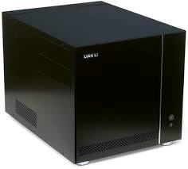

MacOS on Gigabyte GA-B75M
I created my first Hackintosh in 2009, and the process required some thinking. There were already quite a few guides, and, of course, some people had done already the dirty work of working out the drivers and the mechanisms to make Os X install on alien, non Apple, hardware, but the process was definitely not simple. I did then in quick succession 3 hackintoshes, using the same approach.
Fast forward to 2012, I built a new computer and hackintoshed it again, this time with Mountain Lion. In the passed 3 years, the hackintoshing landscape had changed very much, and the process to install OsX was as easy as using the tools Unibeast and Mutibeast provided by tonymacx86. The more serious thinking at this stage was the pre-purchase steps, to ensure that the hardware was as Apple-compatible as possible.
This is the specification of my system: 
- Motherboard: Gigabyte GA-B75M-D3P. With Intel HD4000 graphics.
- CPU: i7 3770
- Memory: 32 Gb
- Hard Disk: Samsung 840 EVO 240 Gb (updated in 2014)
- Extras: IO bracket with USB 3.0 support
- Case: LianLi PCV-351
Just before the release of Yosemite, I decided to upgrade to Mavericks: playing a bit with the BIOS, then with the drivers to install, and in no time Mavericks was ruling.
To perform the Mavericks update, I used a brand new SSD, as I preferred installing it from scratch. But then, Yosemite was already unleased, so why not updating it to Yosemite. As it happens, and building over the experience of the Mavericks install, the upgrade to Yosemite was blazing fast -note that, again, I decided to install from scratch, not to perform a OS update-.